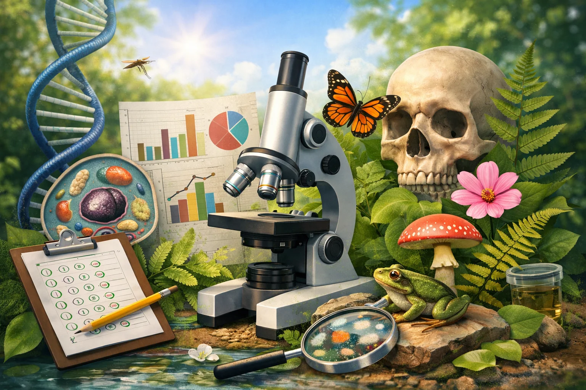

SESI
SENAI
SESI
SENAI
Aqui estaram as melhores dicas para Vestibular sobre biologia e fisica.
Ecologia (o tema campeão): Representa cerca de 35% das provas. Foque em ciclos biogeoquímicos, fluxo de energia, cadeias alimentares, relações ecológicas e impactos ambientais (eutrofização e efeito estufa).
Fisiologia Humana e Saúde: Saiba integrar os sistemas digestório, cardiovascular e respiratório, entender a regulação hormonal e diferenciar vacinas e soros (além de estudar dengue, malária e Chagas).
Genética:Estude as leis de Mendel e heredogramas (dominância, grupos sanguíneos ABO e Rh) e ferramentas modernas, como testes de DNA, transgênicos, clonagem e edição gênica (CRISPR).
Conecte a teoria com atualidades: Bancas adoram usar notícias recentes como contexto para cobrar conceitos básicos. Surtos de arboviroses e emergências climáticas
Estude de forma interdisciplinar: Biologia dialoga o tempo todo com Química (pH sanguíneo, estrutura de proteínas, enzimas, chuva ácida) e Geografia (características dos biomas brasileiros, recursos hídricos e urbanização).
Entenda processos em vez de decorar listas: Em vez de memorizar nomes soltos de enzimas digestivas ou hormônios, organize o estudo por função: onde a substância é produzida, onde ela atua e o que acontece se ela faltar ou estiver em excesso.

Mecânica (a base de tudo): Representa cerca de 35% das provas. Foque em trabalho, potência, conservação de energia, leitura de gráficos na cinemática e aplicação das Leis de Newton (atrito e plano inclinado).
Eletrodinâmica (presença obrigatória): Saiba resolver circuitos elétricos, associações de resistores (série e paralelo), Leis de Ohm e calcular potência e consumo elétrico (o clássico cálculo da conta de luz em kWh).
Óptica Geométrica: Priorize a refração (Lei de Snell e reflexão total), a formação de imagens em espelhos e lentes, e os defeitos da visão (miopia e hipermetropia).
Cuidado extra com as Unidades de Medida: A Física não perdoa quem esquece de converter unidades. Lembre-se sempre de passar a velocidade de $km/h$ para $m/s$ (dividindo por 3,6), minutos para segundos, e massa de gramas para quilogramas (no Sistema Internacional).
Desenhe o problema: Na Mecânica e na Óptica, nunca tente resolver de cabeça. Desenhe o bloquinho, trace os vetores das forças (Peso, Normal, Tração, Atrito) ou os raios de luz. Isso evita erros bobos de sinal e direção.
Extraia dados antes das fórmulas: Ao ler o enunciado, vá anotando no canto da folha os valores dados ($v = 10$, $t = 5$, $m = 2$). Só depois de ver o que você tem na mão, decida qual fórmula aplicar.